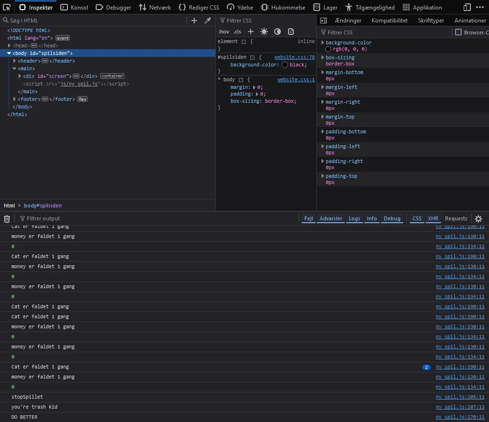

- Spil-idé og papirprototype
- Definéring af spils visuelle virkemidler
- Skitser til brug ved rentegning
- Rentegning
- Aktivitetsdiagram
- Spillet
- Effekt 1-2-3 øvelse
- Assetliste til sitet
- Fejlfindingsøvelser
- State Machine Diagram
- Peer review session
Tema 4 - Grundlæggende Animation
Dette var et super fedt tema. Mit klart yndlings. Det gør mig super glad, at jeg nu har udviklet mit første spil og lært en masse forskellige spændende, vigtige og nyttige til omkring spillet. ALT er jo lavet fra bunden, koden, tegninger, illustrationer, idéen. Det var virkelig spændende hele vejen igennem. Jeg ELSKER at tegne og illustrere og visualisere mine idéer, så jeg ville helt klart sige, nu hvor jeg har lært at bruge illustrator til at rentegne, så er jeg super glad, fordi jeg nu kan få noget fra min stykke papir over på computeren digitalt og så animere det. Det super fedt at kunne udvikle hjemmeside og have forståelse, hvordan alle tingene hænger sammen.
Spil-idé og papirprototype
I denne opgave skulle jeg starte temaet ud med at bruge en idé brainstorm øvelse, hvor jeg skulle skrive 6 forskellige udsagnsord, 6 steder og 6 ting/navneord. Imellem disse ord skulle jeg lave tilfældige streger hen til én af hver enkelt ting, så de var i par af 3. Og på den måde kunne jeg skabe en masse eksempler på spil idéer og jeg besluttede mig så for én og så skulle jeg skrive den grundigt op som en spil beskrivelse.
Derefter kunne jeg så skitsere spillet i hånden og lave en papirprototype video:
Link til videoDefinering af spils visuelle virkemidler
I denne opgave gik det ud på at visualisere idéen med designet. Så jeg startede med at research forskellige billeder fra internettet, som jeg kunne bruge som inspiration fra andre vektorgrafik boksespil. Vektor grafik er bare en anden form for grafik ved at bruge vektorer fra matematik til at skabe grafik i stedet for pixels.
Men dernæst kom jeg så på 3 værdiord, som jeg kunne lave 3 moodboards ud fra.
Næstre trin var at lave en designanalyse af mine tanker om selve spillets design. Dette handler om at afgrænse udtrykket af spillets virkemidler til at have lignende formål med hvert element. Eksempelvis hvis jeg gerne vil have et brugervenligt design, så kræver det også, at jeg overholder gestaltlovene. Disse gestaltlove gælder blandt andet loven om lukkethed, som går ud på at gøre det tydeligt for brugeren, hvilke ting, der hører til hvad. Et eksempel kan være at holde ordet “liv” sammen med de hjerteformede illustrationer, som skal forestille livene i et spil. Så længe de er placeret tæt på hinanden i designet af spillet, så bliver brugeren ikke i tvivl om, at de hænger sammen med hinanden.
Sidst da jeg havde fundet mine 3 fonte, som jeg ville bruge til spillet/hjemmesiden og derudover bestemme mig for, hvilke farver, som jeg skal bruge til spillet, så kunne jeg lave et styletile til hjemmesiden.
Skitser til brug af rentegning
I denne opgave, skulle jeg lave nogle grundige skitser i hånden, som jeg kunne bruge til at lave min digitale grafik til spillet senere hen. Jeg skulle sørge for at lave skitser til hver skærm, som spillet kan komme henover. Dette inkluderer startskærmen, spilskærmen og vinder- og taberskærmen. Jeg skulle sørge for at alle elementer, jeg kommer til at inkludere i spillet, er med på disse skitser, da de netop hver især skulle tegnes individuelt og efterfølgende skal kunne sættes sammen.


Rentegning
Disse rentegninger blev lavet i Adobe Illustrator, hvor jeg først indsatte billeder af mine håndskitser og tegnede vektor grafik henover med værktøjerne i Adobe Illustrator. Jeg sørgede for at farverne brugt, var de eksakt samme som dem fra mit styletile. Når hvert element var tegnet færdigt, så skulle de eksporteres individuelt som SVG billeder, og det betyder Scalable Vector Graphic, hvilket betyder, at de ikke er bundet til en hvis pixelstørrelse, men i stedet fungere med vektorerer, derfor vil kvaliteten af billederne forholde sig det samme uanset for meget man zoomer ind.
Aktivitetsdiagram
Denne opgave gik ud på, at have styr på, hvad der skal se i spillet, altså et slags reaktionsskema. Når en spiller gør noget, hvad sker der så, og hvordan slutter spillet. Flagformen er, når en spiller laver en aktion. De rundede rektangler er funktioner, som spiller kører og diamantformene, er når der er mere en 1 ting, der kan ske. De sorte runde cirkler er, når spillet starter og slutter og sidst er de sorte bjælker intervallet af spillet, som kan kører på loop indtil spillet slutter.

Spillet
Dette tema handlede for det meste om at lære at lave animation, men også at lave vektor grafik i illustrator. Dog var begge disse ting, som skulle implementeres i et spil, og dette spil blev udført i 9 versioner, hvor det gradvist blev mere og mere færdiggjort, og til sidst var alt i løbet af dette tema implementeret korrekt. Både lyde, spilgrafik og animationer hang sammen til og skabe spillet, og det blev kodet med HTML, CSS og JavaScript. Dette tema var min første introduction til javaScript, og dette kodesprog bruges til at lave disse animationer og lyde ved, at man koder javaScript til at tage klasserne fra CSS og putte dem på elementerne i HTML. Den måde en animation kan starte og stoppe er den samme måde en lyd kan afspille og stoppe afspilningen, når man bruger javaScript. Det fungere netop ved, at man selv skal kode med CSS sproget til at lave nogle klasser med animationer eller importerede lyde og grafik i, og så kan man bruge javaScript til at tage disse klasser af og på afhængigt af, hvad der sker i spillet. Disse ting kan afhænge af positionen af spilelementerne, tiden af spillets runde eller spillerens aktioner.
Effekt 1-2-3 øvelse
I løbet af dette tema skulle vi netop lære nogle forskellige animationer, og hvordan man gjorde, så vi kunne implementere det i vores eget spil. Denne opgave er et eksempel på nogle af de animationer, vi skulle lære igennem nogle øvelser og til tider selv tænke os til og ved brug af research.
 Link til sitet
Link til sitet
Assetliste til sitet
Denne opgave er en del af den endelige hjemmeside. Den skulle netop have en underside med alle de assets vi har brugt i spillet. Rettere sagt er det alt det vektor grafik, som jeg har lavet i Adobe Illustrator.
Fejlfindingsøvelser
En anden form for opgaver, som vi skulle løse i dette tema va fejlfindingsopgaver, som er ret gode at lave til at øve sig og blive bedre til at finde fejl og rette i kode med errors. Disse opgaver gik specifik ud på at bruge inspicer/undersøg knappen i browseren, når man havde en side åben med en animation, som ikke virkede, som den skulle. Så skulle man bruge de værktøjer, som ligger under inspicer/undersøg knappen, for at fejlfinde og netop løse problemet, som ligger i koden enten i HTML, CSS eller javaScript. Disse opgaver var en stor hjælp, når man senere skulle arbejde på sit eget spil, fordi det er ret ofte, man støder på uventede problemer i sin kode, når man udvikler spil/hjemmesider.
State Machine Diagram
Denne opgave var en meget vigtig opgave for at forberede sig selv til at begynde med at bruge javaScript for første gang. Dette State Machine Diagram er netop et overblik af, hvad alle funktionerne i javaScript gør. Det er en meget mere kompliceret version af Aktivitetsdiagrammet. Men det er netop et forberedelsesværktøj til den, der koder, så de altid kan vende tilbage og kigge på dette diagram for at få sit overblik tilbage, fordi med både HTML, CSS og javaScript, så kan det hurtigt blive forvirrende at kigge på. Derfor laver man dette diagram på forhånd, så man kan se, hvordan det er meningen, at koden skal hænge sammen.

Peer review session
Dette var en afrundende opgave, hvor man skulle have andre til at bedømme ens spil ud fra et spørgeskema, man selv lavede. Mine svar var meget positive, da de fleste synes godt om spillet ved første indtryk, det grafiske design og valget af lyde. Ovenikøbet, var der mange, som var enige med, at det enten var passende eller svært sværhedsgrad, hvilket var målet. Dog fik jeg også noget konstruktiv feedback, da der var nogen, der synes, at spillets formål var lidt utydeligt, så de foreslog, at jeg næste gang skulle have en pop-up skærm med spilleregler, som bliver vist lige inden, at man begynder spillet, så man er mere klar på, hvad man skal i stedet for at prøve sig frem og gætte.